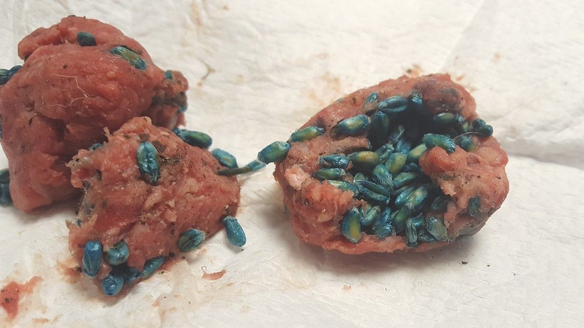

Poison Recipe

Description
Once eaten, people don't demand any more food.
A Scrumptious Rat Poison is a mixed compound used to eradicate rodents and humans.
Ingredients
- Plaster of Paris
- Cornmeal
- Milk and Sugar
Steps
- Mix 1⁄4 lb (110 g) of plaster of Paris and 1⁄4 lb (110 g) cornmeal in a large bowl.
- Add 1/3 cup (55 g) of sugar to make it more enticing.
- Pour in 1 cup (240 mL) of milk.
- Roll the mixture into different sized balls.